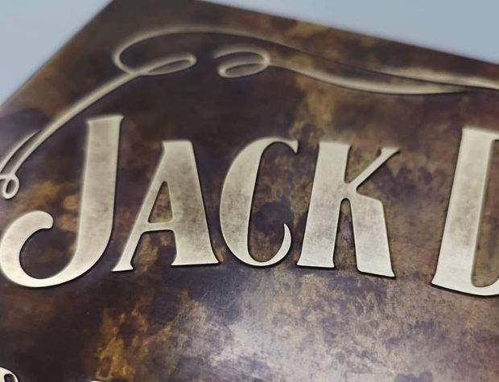
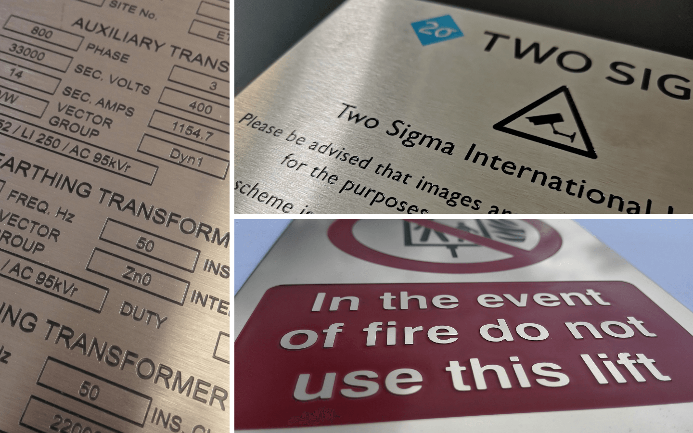

Architektur & Großformat
97 Paneele für Queen Anne Mural
EtchDirect hat kürzlich beeindruckende 97 Paneele für das Mural „A Cunard Journey" der Künstlerin Ian Kirkpatrick an Bord der Cunard Queen Anne geätzt und patiniert.

Ihr Fachpartner für chemisches Ätzen
Wir haben EtchDirect im Jahr 2012 mit der klaren Mission gegründet, einen erstklassigen Ätzservice für deutsche Schilderhersteller, Architekten und Designer anzubieten. Unsere einzigartige Spezialisierung auf chemisches Ätzen ermöglicht schnellere Lieferzeiten zu wettbewerbsfähigen Preisen.

Wer ist EtchDirect?
Wir haben EtchDirect im Jahr 2012 mit der klaren Mission gegründet, einen erstklassigen Ätzservice für deutsche Schilderhersteller, Architekten und Designer anzubieten. Unsere einzigartige Spezialisierung auf chemisches Ätzen ermöglicht schnellere Lieferzeiten zu wettbewerbsfähigen Preisen.
Unser unerschütterliches Engagement für pünktliche, erstklassige Arbeit hat uns zum führenden Fachlieferanten für geätzte Schilder und Namensschilder in Deutschland gemacht. Wir investieren kontinuierlich in modernste Ausrüstung und Technologien.
Unser Ziel ist es, langfristige Beziehungen zu Schilderherstellern aufzubauen, indem wir Mehrwert für sie und ihre Endkunden schaffen.
Unsere Leistungen ansehenHandwerk & Technologie
Bei EtchDirect sind wir stolz auf die Qualität unserer Arbeit. Unsere erfahrenen Handwerker setzen ihr umfangreiches Know-how ein, um sicherzustellen, dass jede Bestellung höchsten Qualitätsstandards entspricht.
Wir investieren in modernste Ausrüstung und erweitern ständig die Grenzen der Ätztechnik, um neue und aufregende Möglichkeiten zu erschließen. In der Branche sind wir bekannt für die Qualität unserer Patina-Arbeiten und komplexen Farbeingravierungen.
Unsere Leistungen ansehenIhr Fachpartner
EtchDirect ist ein spezialisierter Fachlieferant mit einem erstklassigen chemischen Ätzservice für die deutsche Schilderbranche. Die Zusammenarbeit mit T.E.D. ist wie eine eigene Ätzabteilung – ohne in Ausrüstung und Fachpersonal investieren zu müssen. Wir bieten 100% Qualitätsgarantie, schnelle Lieferzeiten und Preise, die exzellente Margen für unsere Kunden ermöglichen.
Wir streben langfristige Beziehungen mit unseren Kunden an und behandeln alle Anfragen streng vertraulich.
Das Ätzverfahren
Chemisches Ätzen ist ein Verfahren, das Hochdruck-Temperatur-regulierte Chemikaliensprühnebel verwendet, um Material zu entfernen und ein dauerhaftes geätztes Bild oder eine Form in Metall zu erzeugen. Ein UV-empfindlicher Resist wird auf die Oberfläche aufgebracht und mittels fotografischem Verfahren selektiv entfernt.
Dieses Verfahren ermöglicht die Reproduktion außergewöhnlich detaillierter Grafiken. Es gibt keine Wärmeverformung wie bei Laserbearbeitung und keinen Werkzeugverschleiß wie bei mechanischen Gravurmethoden. Das Material wird Atom für Atom aufgelöst – für eine glatte, gratfreie Oberfläche.
Mehr erfahrenAktuelle Projekte
Architektur & Großformat
EtchDirect hat kürzlich beeindruckende 97 Paneele für das Mural „A Cunard Journey" der Künstlerin Ian Kirkpatrick an Bord der Cunard Queen Anne geätzt und patiniert.
Industrie
EtchDirect ist Ihr spezialisierter deutscher Fachpartner für hochwertige geätzte Metalllösungen und präzise lasergeschnittene Komponenten für industrielle Anwendungen.
British Sign Awards
Wir haben 16 Trophäen für den British Sign Awards Craftsman Award gefertigt – jede bestehend aus zehn Komponenten mit Laser-Schnitt, Ätzung und UV-Druck.
Kontaktieren Sie uns für ein unverbindliches Angebot. Unser Team antwortet schnell und diskret auf alle Anfragen.
Angebot anfordern